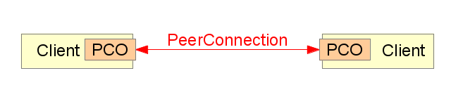

cc-by eff.org
WebRTC:
Eine neue Art von Web?
Marius Melzer | Jan Lelis
Wie kommunizieren wir im Internet?
Serverbasierte Kommunikation

CC-BY-SA Marius Melzer, based on works by RRZEIcons, Everaldo Coelho and YellowIcon
Föderierte Serverbasierte Kommunikation

CC-BY-SA Marius Melzer, based on works by RRZEIcons, Everaldo Coelho and YellowIcon
Peer-to-Peer

CC-BY-SA Marius Melzer, based on works by RRZEIcons, Everaldo Coelho and YellowIcon
Web Real-Time Communications
Was ist WebRTC?
Technologie
WebRTC in Aktion
Initially by Global IP Solutions (GIPS) 2010
Kommender Standard
World Wide Web Consortium
Internet Engineering Task Force
Ursprüngliche Bestandteile entwickelt von
Global IP Solutions
Von Google 2010 gekauft
Opera plans full support
Unterstützte Browser
Chrome
Stable
Firefox
Stable
Opera
Nur getUserMedia

getUserMedia
JavaScript Zugriff auf die Webcam!
getUserMedia Demo
getUserMedia Demo
<video id="ex" autoplay="autoplay">
<script>
navigator.webkitGetUserMedia(
{video: true, audio: false},
function(stream) {
document.getElementById('ex').src =
webkitURL.createObjectURL(stream);
}
);
</script>PeerConnection
Verbindung zwischen beiden Teilnehmern
Benötigt einen externen "Signaling-Kanal"
Nutzbar für Audio/Video und Daten ("Data Channels")
Technologie
Signaling
Verbindungsaufbau
Verbindungsprotokolle
Technologie
Signaling-Kanal
Zur freien Auswahl: XHR, WS, ...
Entwickler implementiert die Details
Technologie
Signaling-Kanal

Signaling-Kanal
Server Kontaktieren

Technologie
Verbindungsaufbau
Audio/Video Fähigkeiten austauschen
Besten Weg für eine Verbindung suchen
Verbindung aufbauen
Verbindungsaufbau
Fähigkeiten Abgleichen

Renegotiation Possible. Developer not supposed to edit sdp, but can
Verbindungsaufbau
SDP
"Session Description Protocol"
Enthält Details über Medienfähigkeiten
Verbindungsaufbau
SDP Beispiel
v=0 o=- 3869962025294249707 2 IN IP4 127.0.0.1 s=- t=0 0 a=group:BUNDLE audio video a=msid-semantic: WMS Yhb3bAbcbJfG3I2gQ1CSKyZ1YxLbdP4pPJqd m=audio 1 RTP/SAVPF 111 103 104 0 8 107 106 105 13 126 c=IN IP4 0.0.0.0 a=rtcp:1 IN IP4 0.0.0.0 a=ice-ufrag:BEu7Lja6FjAY0e9f a=ice-pwd:j7e1RG5lkZglnryHeqB4drYn a=ice-options:google-ice a=fingerprint:sha-256 CE:D3:47:15:E8:5D:64:35:30:32:F7:14:FD:18:17:9C:E1:3A:F2:0B:0B:90:FF:26:90:21:B1:40:68:9C:EA:E7 a=extmap:1 urn:ietf:params:rtp-hdrext:ssrc-audio-level a=sendrecv a=mid:audio a=rtcp-mux a=crypto:1 AESCM128HMACSHA180 inline:gFszjZPHhEfqGehRrfnSrGtNqMlzYglKuvewCInq a=rtpmap:111 opus/48000/2 a=fmtp:111 minptime=10 a=rtpmap:103 ISAC/16000 a=rtpmap:104 ISAC/32000 a=rtpmap:0 PCMU/8000 a=rtpmap:8 PCMA/8000 a=rtpmap:107 CN/48000 a=rtpmap:106 CN/32000 a=rtpmap:105 CN/16000 a=rtpmap:13 CN/8000 a=rtpmap:126 telephone-event/8000 a=maxptime:60 a=ssrc:2710618532 cname:aqZgznSt7eFJwMlw a=ssrc:2710618532 msid:Yhb3bAbcbJfG3I2gQ1CSKyZ1YxLbdP4pPJqd Yhb3bAbcbJfG3I2gQ1CSKyZ1YxLbdP4pPJqda0 a=ssrc:2710618532 mslabel:Yhb3bAbcbJfG3I2gQ1CSKyZ1YxLbdP4pPJqd a=ssrc:2710618532 label:Yhb3bAbcbJfG3I2gQ1CSKyZ1YxLbdP4pPJqda0 m=video 1 RTP/SAVPF 100 116 117 c=IN IP4 0.0.0.0 a=rtcp:1 IN IP4 0.0.0.0 a=ice-ufrag:BEu7Lja6FjAY0e9f a=ice-pwd:j7e1RG5lkZglnryHeqB4drYn a=ice-options:google-ice a=fingerprint:sha-256 CE:D3:47:15:E8:5D:64:35:30:32:F7:14:FD:18:17:9C:E1:3A:F2:0B:0B:90:FF:26:90:21:B1:40:68:9C:EA:E7 a=extmap:2 urn:ietf:params:rtp-hdrext:toffset a=sendrecv a=mid:video a=rtcp-mux a=crypto:1 AESCM128HMACSHA180 inline:gFszjZPHhEfqGehRrfnSrGtNqMlzYglKuvewCInq a=rtpmap:100 VP8/90000 a=rtcp-fb:100 ccm fir a=rtcp-fb:100 nack a=rtcp-fb:100 goog-remb a=rtpmap:116 red/90000 a=rtpmap:117 ulpfec/90000 a=ssrc:1347190094 cname:aqZgznSt7eFJwMlw a=ssrc:1347190094 msid:Yhb3bAbcbJfG3I2gQ1CSKyZ1YxLbdP4pPJqd Yhb3bAbcbJfG3I2gQ1CSKyZ1YxLbdP4pPJqdv0 a=ssrc:1347190094 mslabel:Yhb3bAbcbJfG3I2gQ1CSKyZ1YxLbdP4pPJqd a=ssrc:1347190094 label:Yhb3bAbcbJfG3I2gQ1CSKyZ1YxLbdP4pPJqdv0
NAT: The IP4 World is not Ideal...
Verbindungsaufbau
Hole Punching
Hole Punching
STUN
"Session Traversal Utilities for NAT"
Wie ist der eigene Rechner von der Welt außerhalb erreichbar?
Hole Punching
STUN

Hole Punching
ICE
"Interactive Connectivy Establishment"
Übermittelt möglichst viele Wege sich gegenseitig zu erreichen
Hole Punching
ICE

Verbindungsaufbau
Erfolg

Hole Punching
TURN
"Traversal Using Relays around NAT"
Es kann ein "Relay"-Server für die Daten benutzt werden
Hole Punching
TURN

Solutions: Limit ICE candidates: Only TURN IP / Public IP
Verbindungsaufbau
Datenschutz Bedenken
Teilnehmer erfahren die IPs der anderen Teilnehmer
Die private IP (hinter einem NAT) könnte ebenfalls bekannt werden
…auch wenn Verbindung gar nicht aufgebaut werden konnte
Technologie
Verbindungsprotokolle
Datagram Transport Layer Security (DTLS)
Secure Real-time Transport Protocol (SRTP)
Stream Control Transmission Protocol (SCTP)
WebRTC in Aktion
Tow Truck
Sharefest
Banana Bread
PeerServer
PeerCDN

Einfache Video-Kommunikationsplattform
Verfügbar unter palava.tv
Funktioniert mit Chrome und Firefox
palava: Zukunft
Gründung palava Verein
Wird palava.tv betreiben
signaling.io
Kommerzieller Signaling Service
open source
Anfang Oktober
WebRTC: Auswirkungen
Für Endnutzer?
Für Entwickler?
Für Telcos?
Für Geheimdienste?
WebRTC: Mehr Information
Book www.webrtcbook.com
Specs www.w3.org/TR/webrtc
Specs tools.ietf.org/wg/rtcweb
Blog bloggeek.me
Blog blog.palava.tv
Kontakt
palava.tv / @palavatv
@faraoso / @happycode
palava wurde entwickelt von
signaling.io / Innovailable / CodeSpring
Folien unter github.com/palavatv
CC-BY-SA Jan Lelis, Marius Melzer